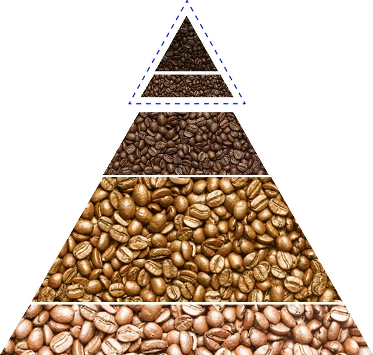

世界の生産者から美味しいものだけを

契約農園から厳選した最高品質のコーヒー豆を直接買い付けしております。
各地の気候と土壌が生み出す豊かな風味、生産者の情熱と技術が結集。

美味しさだけでなく、生産背景まで感じられるコーヒー体験を。
一杯のコーヒーに、特別な意味を。
スペシャリティーコーヒーが織りなす、華やかな味わいと香り。毎日を彩る小さな贅沢を、お楽しみください。
心地よい時の流れを感じながら、究極のコーヒー体験をお届けします。
契約農園から厳選した最高品質のコーヒー豆を直接買い付けしております。
各地の気候と土壌が生み出す豊かな風味、生産者の情熱と技術が結集。
美味しさだけでなく、生産背景まで感じられるコーヒー体験を。
スペシャリティコーヒーとは？

 5%
5%
10%
50%
35%
High Quality Specialty
Specialty
ブルーマウンテン、キリマンジャロ、ハワイコナなど
スペシャリティコーヒーとは、世界の流通量のわずか5%のコーヒー豆。
それは品質、風味、そして生産方法において最高レベルの基準を満たしたコーヒーを指します。
このコーヒーは、特定の地域、特有の気候、独自の栽培方法によって育てられ、各豆が持つユニークな特性が重視されます。
生産者の情熱と献身が、一粒一粒の豆に込められています。
柑橘系の明るい酸味から、花やハーブの繊細な香り、甘く濃厚なチョコレートやナッツのノートまで、幅広い風味が楽しめます。
私たちが提供するスペシャリティーコーヒーは、この高い基準に基づいて選ばれています。
一杯のコーヒーで、生産者のストーリーと自然の恵みを感じてください。